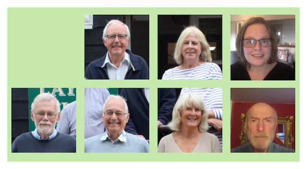

| Parish Council |

|
 |
 |
Layham Parish Council Members of Layham Parish Council. Pictured back row from left to right are John Curran, Jane Cryer (Clerk) and Charlotte Britton (Chairman); front row left to right are Mike Woods (Vice Chairman), David Pratt, Sheila Roberts and Graham Coleman. Clerk and Responsible Finance Officer: Jane Cryer, Sunnyside Cottage, Overbury Hall Road, Lower Layham, IP7 5NA (01473 824287 / 07920 713940; email: This e-mail address is being protected from spambots. You need JavaScript enabled to view it ). Chairman: Charlotte Britton, Wedgwood, Park Corner Road, Groton, CO10 5EG (01787 210 312). Charlotte is also the Layham Archivist. Vice Chairman: Michael Woods, 8 Watermill Close, Upper Layham (01473 823 798). Michael is the Parish Tree and Hedgerow Warden, represents the Council at meetings of the Suffolk Association of Local Councils (SALC) and the Playing Field committee, and co-ordinates 'Letter from Layham' in the Hadleigh Community News. He is also the Local History Recorder. Councillors:
Jon Woods, a non-council member, is the Layham webmaster. Parish Council meetings: Parish Council meetings are usually held in the village hall on the fourth Wednesday of each month. Villagers are welcome as observers and there is a short time when they are invited to speak. The agenda is posted on the village notice boards. Minutes of meetings are available on this site as are the audited annual accounts. Records of the main business of the council are published in 'Letter from Layham' in Hadleigh Community News. The Annual Parish Meeting is held each April when a report on the year is given. This is a public meeting and participation by members of the public is welcomed. The Register of Interests forms for Layham parish councillors may be found on Babergh District Council's web site. Layham Green TeamThe Layham Green Team exists to try to improve the green credentials of our
village. Members of the team have organised a full day exhibition in the
Village Hall, an annual village clean up and a plastic film collection.
They have also established a new Waste Management Site in the
village. Layham Gravel Pit Liaison GroupRepresentatives of the community meet occasionally with the management of Lower Layham Brett Aggregates. If you have an interest in this then contact David Pratt (01473 827 667). Parish Tree WardenBabergh District Council co-ordinates a Parish Tree Warden scheme and Layham Parish is a member of the group. The current tree warden is Michael Woods (01473 823 798) who is available to give advice on any aspect of tree or hedgerow planting or maintenance. In addition to offering help where requested the tree warden is also proactive in arranging for the planting of trees and hedgerows of which there have been many examples over the past 15 years. Hedgerow SurveyOver a two year period (2008-2009) every hedge line in the village has been surveyed by a group of sixteen volunteers. The final map together with survey sheets for each hedgerow are available for consultation. Babergh District CouncilOur District Councillor at Babergh
District Council, representing the Lower Brett Ward (Layham, Polstead,
Raydon, Shelley and Higham) is John Ward (07802 414 981). Suffolk County CouncilOur present County Councillor at Suffolk County Council is Georgia Hall (email georgia.hall@suffolk.gov.uk) who represents the Samford Electoral Division (Dodnash, Lower Brett and Mid Samford wards). The County Council Headquarters is in Ipswich. General enquiries on 01473 265 119. |
{kind=link}
{kind=link}
{kind=link}